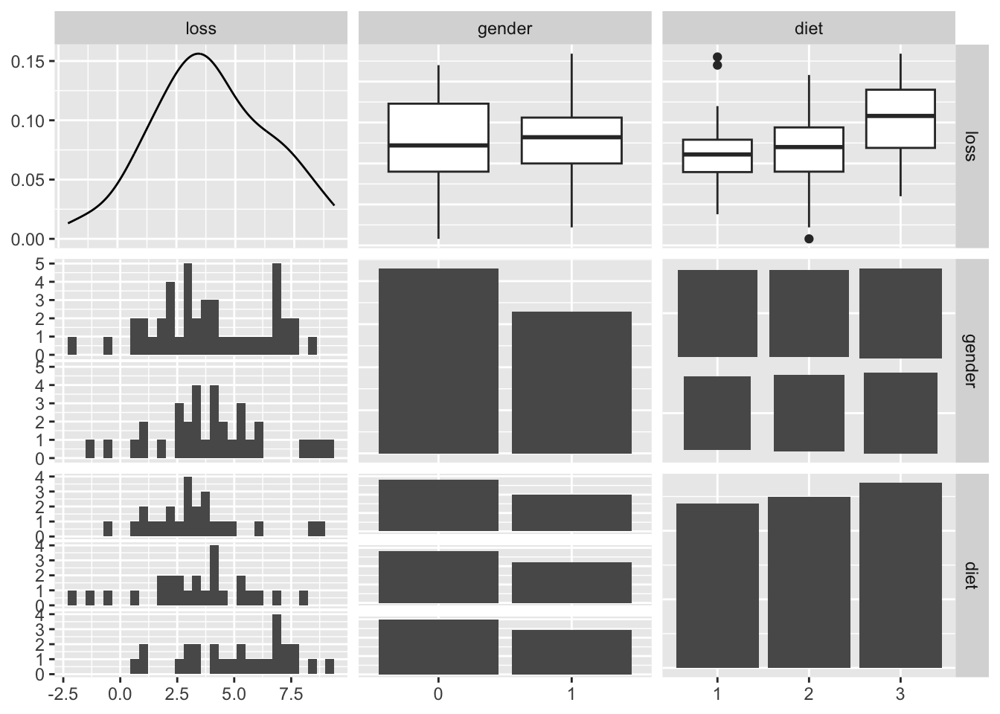

Here is some new data to play with a bit to explore one-way and two-way analysis of variance models. These data represent weight data associated with three different diet types. There are 76 observations of individuals with the following characteristics:
Self-Identified Gender (0/1)
Age (earth years. 🤓)
Height (cm)
Pre.weight & weight6weeks (kg)
Diet (1,2,3)
The data are located as a CSV file named DietData.csv linked from the Canvas page. Load the data in and format things so they look correctly to you.
# load the data in herelibrary( tidyverse )
── Attaching core tidyverse packages ──────────────────────── tidyverse 2.0.0 ──
✔ dplyr 1.2.1 ✔ readr 2.2.0
✔ forcats 1.0.1 ✔ stringr 1.6.0
✔ ggplot2 4.0.3 ✔ tibble 3.3.1
✔ lubridate 1.9.5 ✔ tidyr 1.3.2
✔ purrr 1.2.2
── Conflicts ────────────────────────────────────────── tidyverse_conflicts() ──
✖ dplyr::filter() masks stats::filter()
✖ dplyr::lag() masks stats::lag()
ℹ Use the conflicted package (<http://conflicted.r-lib.org/>) to force all conflicts to become errors
Rows: 76 Columns: 7
── Column specification ────────────────────────────────────────────────────────
Delimiter: ","
dbl (7): Person, gender, Age, Height, pre.weight, Diet, weight6weeks
ℹ Use `spec()` to retrieve the full column specification for this data.
ℹ Specify the column types or set `show_col_types = FALSE` to quiet this message.
Exploratory Data Anlsysis
One of the first things to do is to look at the data and see if there are any obvious things. Go ahead and explore these data visually. What do you see?
# Data visualizationlibrary( GGally )ggpairs( df )
`stat_bin()` using `bins = 30`. Pick better value `binwidth`.
`stat_bin()` using `bins = 30`. Pick better value `binwidth`.

Estimating Mean Values
Make a table of Weigth Loss by gender and diet.
# Table output
1-Way Analysis of Variance
Diet Issues:
The underlying linear model.
\[
y_{ij} = \mu + \tau_{Diet, i} + \epsilon_j
\]
Test the null hypothesis, \(H_O:\)There is no effect of diet on weight loss (e.g., \(\tau_{Diet-1} = \tau_{Diet-2} = \tau_{Diet-3} = 0.0\)). Is there evidence for one diet producing more weight loss than the others? Create an aov analysis and assign it to the variable fit.diet and examine its contents.
# Define modelfit.diet <-aov( loss ~ diet, data=df)anova(fit.diet)
Analysis of Variance Table
Response: loss
Df Sum Sq Mean Sq F value Pr(>F)
diet 2 60.53 30.2635 5.3831 0.006596 **
Residuals 73 410.40 5.6219
---
Signif. codes: 0 '***' 0.001 '**' 0.01 '*' 0.05 '.' 0.1 ' ' 1
Are they all significantly different? Try the TukeyHSD() Interpret the results.
# Posthoc testTukeyHSD(fit.diet)
Tukey multiple comparisons of means
95% family-wise confidence level
Fit: aov(formula = loss ~ diet, data = df)
$diet
diff lwr upr p adj
2-1 -0.032000 -1.6530850 1.589085 0.9987711
3-1 1.848148 0.2567422 3.439554 0.0188047
3-2 1.880148 0.3056826 3.454614 0.0152020
How much of the variation is explained? If you notice when you do a summary from a lm() (regression) model, it gives you the \(R^2\) values directly (remember \(R^2 = \frac{SS_{model}}{SS_{Error}}\)). Does summary() of your aov model give you that?
# How much variance?
Since I asked the question, the answer is probably no. Why does it not do this? Probably for historical reasons, which are a bit of a pain in the backside. That being said, there are some tidy ways to fix this issue. I’m going to use the broom package which allows us to clean up (or tidy if you will) the model objects. This will take the model object and pull out all the ANOVA table stuff and put it into a tibble.
library( broom ) # use your model fit next (I called mine fit.diet)tidy_diet <-tidy( fit.diet )tidy_diet
# A tibble: 2 × 6
term df sumsq meansq statistic p.value
<chr> <dbl> <dbl> <dbl> <dbl> <dbl>
1 diet 2 60.5 30.3 5.38 0.00660
2 Residuals 73 410. 5.62 NA NA
Now, since it is all easily accessible, we can calculate the \(R^2\) from the new model output.
# Estimate the variance explained from the raw sums of squaresr2_Diet <- tidy_diet$sumsq[1] /sum( tidy_diet$sumsq )r2_Diet
[1] 0.1285269
Gender:
The underlying linear model.
\(y_{ij} = \mu + \tau_{gender, i} + \epsilon_j\)
Independent of the diet, test the null hypothesis \(H_O:\)There is no difference in weight loss between genders (e.g., ${gender-0} = {gender-2} = 0.0 $). Is there evidence for one gender being significantly different than another? How much of the variation is explained (another \(R^2\) by gender)?
So here we do something a bit different. We want to simultaneously ask the following questions:
Do diets influence weight loss?
Do genders influence weight loss?
Is there an interaction where different genders respond differently to different diets?
In \(R\), this is done as:
# diet model
# gender model
# interaction model
What is the \(R^2\) for this model?
# best model variance explained
Which Model is Best?
How would you compare the models you generated? How do you interpret the findings?
Explain, in words, your findings and interpretation of these findings
Source Code
---title: "Analysis of Variance"author: "YOUR NAME HERE"execute: echo: trueformat: html: code-tools: true toc: false---Here is some new data to play with a bit to explore one-way and two-way analysis of variance models. These data represent weight data associated with three different diet types. There are 76 observations of individuals with the following characteristics:- Self-Identified Gender (0/1)- Age (earth years. 🤓)- Height (cm)- Pre.weight & weight6weeks (kg)- Diet (1,2,3)The data are located as a CSV file named `DietData.csv` linked from the Canvas page. Load the data in and format things so they look correctly to you.```{r}# load the data in herelibrary( tidyverse )read_csv( "data/DietData.csv") |>mutate( gender =factor( gender ), Diet =factor( Diet, ordered=TRUE )) |>mutate( loss = pre.weight - weight6weeks ) |>select( loss, gender, diet = Diet ) -> df ```## Exploratory Data AnlsysisOne of the first things to do is to look at the data and see if there are any obvious things. Go ahead and explore these data visually. What do you see?```{r}# Data visualizationlibrary( GGally )ggpairs( df )```## Estimating Mean ValuesMake a table of Weigth Loss by gender and diet.```{r}# Table output```## 1-Way Analysis of Variance*Diet Issues:* The underlying linear model.$$y_{ij} = \mu + \tau_{Diet, i} + \epsilon_j$$Test the null hypothesis, $H_O:$ *There is no effect of diet on weight loss* (e.g., $\tau_{Diet-1} = \tau_{Diet-2} = \tau_{Diet-3} = 0.0$). Is there evidence for one diet producing more weight loss than the others? Create an `aov` analysis and assign it to the variable `fit.diet` and examine its contents.```{r}# Define modelfit.diet <-aov( loss ~ diet, data=df)anova(fit.diet)```Are they all significantly different? Try the `TukeyHSD()` Interpret the results.```{r}# Posthoc testTukeyHSD(fit.diet)``` How much of the variation is explained? If you notice when you do a summary from a `lm()` (regression) model, it gives you the $R^2$ values directly (remember $R^2 = \frac{SS_{model}}{SS_{Error}}$). Does `summary()` of your `aov` model give you that?```{r}# How much variance?```Since I asked the question, the answer is probably no. Why does it not do this? Probably for historical reasons, which are a bit of a pain in the backside. That being said, there are some `tidy` ways to fix this issue. I'm going to use the `broom` package which allows us to clean up (or tidy if you will) the model objects. This will take the model object and pull out *all* the ANOVA table stuff and put it into a `tibble`.```{r}library( broom ) # use your model fit next (I called mine fit.diet)tidy_diet <-tidy( fit.diet )tidy_diet```Now, since it is all easily accessible, we can calculate the $R^2$ from the new model output.```{r}# Estimate the variance explained from the raw sums of squaresr2_Diet <- tidy_diet$sumsq[1] /sum( tidy_diet$sumsq )r2_Diet ```*Gender:* The underlying linear model.$y_{ij} = \mu + \tau_{gender, i} + \epsilon_j$Independent of the diet, test the null hypothesis $H_O:$ *There is no difference in weight loss between genders* (e.g., $\tau_{gender-0} = \tau_{gender-2} = 0.0 $). Is there evidence for one gender being significantly different than another? How much of the variation is explained (another $R^2$ by gender)?```{r}# partition effects```How do you interpret these results thus far?# Do genders respond differently to diets?$y_{ijk} = \mu + \tau_{Diet,i} + \tau_{gender,j} + \epsilon_k$So here we do something a bit different. We want to simultaneously ask the following questions:- Do diets influence weight loss?- Do genders influence weight loss?- Is there an interaction where different genders respond differently to different diets?In $R$, this is done as:```{r}# diet model``````{r}# gender model``````{r}# interaction model```What is the $R^2$ for this model?```{r}# best model variance explained```# Which Model is Best?How would you compare the models you generated? How do you interpret the findings?*Explain, in words, your findings and interpretation of these findings*